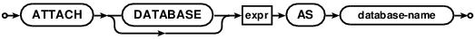

Choose any three.
|
|
SQLite里的SQL
SQL As Understood By SQLite
ATTACH DATABASE



ATTACH DATABASE语句可以将其他的数据库文件添加到当前的数据库连接上。AS关键词前的表达式指定了附加库的文件名。数据库文件名的语意与sqlite3_open() 和 sqlite3_open_v2()的参数一样。特殊名":memory:" 会附加一个内存数据库，空字符串名会附加一个临时库。如果在数据库连接上启用了URI文件名处理，那么文件名参数可以是一个URI 文件名。URI文件名默认是禁用的。不过在未来的SQLite版本上可能会改变，所以建议应用程序开发者去了解相关内容。
The ATTACH DATABASE statement adds another database
file to the current database connection.
The filename for the database to be attached is the value of
the expression that occurs before the AS keyword.
The filename of the database follows the same semantics as the
filename argument to sqlite3_open() and sqlite3_open_v2(); the
special name ":memory:" results in an in-memory database and an
empty string results in a new temporary database.
The filename argument can be a URI filename if URI filename processing
is enable on the database connection. The default behavior is for
URI filenames to be disabled, however that might change in a future release
of SQLite, so application developers are advised to plan accordingly.
AS关键词后面的名字是附加数据库在SQLite内部使用的数据库名。数据库名'main'和'temp'分别引用了主数据库和临时表适用的数据库。主库和临时库是不能被附加和分离的。
The name that occurs after the AS keyword is the name of the database
used internally by SQLite.
The database-names 'main' and
'temp' refer to the main database and the database used for
temporary tables. The main and temp databases cannot be attached or
detached.
附加库上的表可以使用database-name.table-name语法来引用。如果表名在所有附加库和主库中都是唯一的，那么database-name就不是必须的了。如果不同的库上出现了两个以上同名的表，并且没有使用database-name前缀引用表，那么就会选择最新附加库上的表。
Tables in an attached database can be referred to using the syntax
database-name.table-name. If the name of the table is unique
across all attached databases and the main and temp databases, then the
database-name prefix is not required. If two or more tables in
different databases have the same name and the
database-name prefix is not used on a table reference, then the
table chosen is the one in the database that was least recently attached.
如果主数据库不是"内存数据库"并且journal_mode不是WAL，则在多个附加库上执行事务是原子操作。如果主数据库是"内存数据库"或者journal_mode是WAL，那么事务在每个独立的数据库文件上是原子操作。但是如果在两个以上数据库文件上执行COMMIT的过程中主机宕机了，那么会出现一些文件已经修改了而另一些文件没有修改的情况。
Transactions involving multiple attached databases are atomic,
assuming that the main database is not ":memory:" and the
journal_mode is not WAL. If the main
database is ":memory:" or if the journal_mode is WAL, then
transactions continue to be atomic within each individual
database file. But if the host computer crashes in the middle
of a COMMIT where two or more database files are updated,
some of those files might get the changes where others
might not.
使用sqlite3_limit()设置SQLITE_LIMIT_ATTACHED可以限制同时附加到一个数据库连接上的数据库的数量。
There is a limit, set using sqlite3_limit() and
SQLITE_LIMIT_ATTACHED, to the number of databases that can be
simultaneously attached to a single database connection.